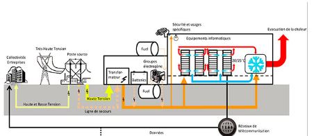

Chaque jour, des quantités prodigieuses de données sot mises en circulation, à l'occasion d'une saisie ou d'un clic anodins, pour envoyer un mail avec pièce jointe, faire des achats sur un site marchand, poster un message sur Twitter ou lire le journal en ligne.
Leur conseption rend la plupart de ces datacenters extrêmement énergivores.
A l'échèle mondiale, les centres de stockage de données numériques consomment environ:
Lien vers ma 2ème page: ici
